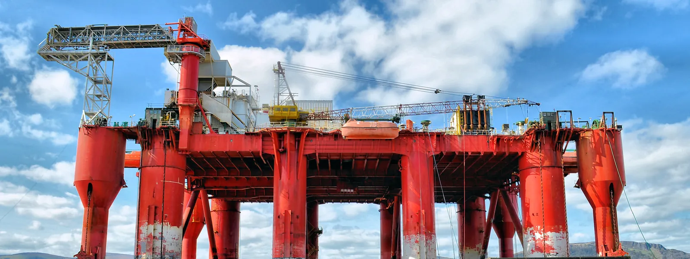
Praca na platformach wiertniczych
Dobra informacja to połowa sukcesu. Agencja Informacji Personalnej z Bolesławca przygotowuje opracowania o pracy na morskich platformach: zawody, wymagania, kursy, rotacje i warunki.
Zamów pełną ofertę informacyjnąRzetelna informacja, zanim wyślesz CV na platformę
Specjalizujemy się w opracowaniach informacyjnych o rynku pracy w kraju i za granicą, przede wszystkim o pracy w przemyśle wydobywczym na morzu: na platformach wiertniczych, tankowcach i terminalach rozładunkowych.
Pełna oferta informacyjna zawiera wymagania pracodawców, potrzebne kursy, warunki socjalne, zasady zatrudnienia i wynagradzania oraz adresy baz danych, w których można zarejestrować swoje CV. Napisz kilka słów o sobie: wiek, zawód, znajomość języków - wtedy łatwiej wskażemy konkretne informacje.
Nie jesteśmy agencją zatrudnienia
Agencja Informacji Personalnej nie prowadzi pośrednictwa pracy w rozumieniu ustawy o promocji zatrudnienia i instytucjach rynku pracy. Dostarczamy informacji i kontaktów do baz kadr. O przyjęciu na platformę, wynagrodzeniu i zatrudnieniu decyduje wyłącznie pracodawca.
Kogo zatrudnia się na platformach
Zawody morskie, wiertnicze, techniczne, medyczne, hotelowe i gastronomiczne. Pracują tu mężczyźni i kobiety w wieku od 20 do 60 lat, poszukiwani są też geolodzy, geofizycy, pielęgniarki, lekarze i tłumacze.
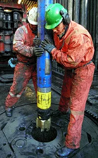
Załoga wiertnicza
Roughneck, Pumpman, Derrickman, Assistant Driller i Driller - praca na pokładzie wiertniczym i w pompowni płuczki.
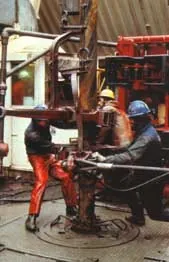
Obsługa urządzeń
Pompy głębinowe i urządzenia na wiertniach. Jest możliwość przyuczenia osób bez zawodu, kursy na koszt pracodawcy.
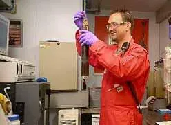
Laboratorium
Chemicy badają próbki z odwiertów: zawartość wody, ropy i piasku, pH, bakterie i korozję.
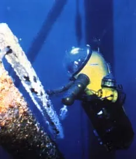
Nurkowie
Naprawy i przeglądy podwodnych części konstrukcji. Po zejściu na głębokość pobyt w komorze dekompresyjnej.
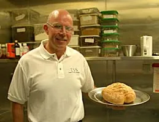
Hotel i kuchnia
Steward, kucharz, nocny piekarz i camp boss - wyżywienie załogi, pralnia i porządek w kajutach.
Zawody techniczne i morskie
Elektrycy, ślusarze, spawacze, malarze-konserwatorzy, mechanicy oraz oficerowie z certyfikatami STCW 95.
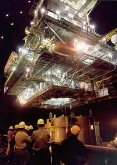
Ochrona obiektów
Ochrona instalacji wydobywczych na morzu, monitoring i zawody związane z bezpieczeństwem.
Kierowcy cystern
Kierowcy z uprawnieniami i stażem do obsługi terminali rozładunkowych i stacji paliw koncernów.
14 dni na platformie, 21 dni w domu
W takim układzie masz w roku dziewięć trzytygodniowych przerw, czyli około 3/5 roku wolnego. Na zmianie pracuje się do dwunastu godzin, kontrakty podpisuje się zwykle na 3, 6 lub 12 miesięcy, z możliwością przedłużenia.
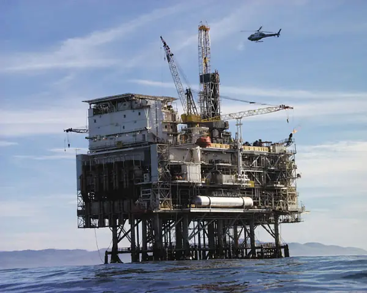
Platforma jak małe miasteczko
Własne lądowisko dla helikopterów, elektrociepłownia i stacja uzdatniania wody morskiej. Każdy pracownik ma kajutę z łazienką, a zwykle są też kino, kawiarnia, basen i sale gimnastyczne. Posiłki są świeżo przygotowywane na miejscu.
Wymagania pracodawców
- Wiek 20-60 latmężczyźni i kobiety
- I kategoria zdrowiabez chorób wymagających stałej opieki lekarskiej
- Niekaralnośćbez przeszłości kryminalnej
- Predyspozycje psychofizyczneodporność na stres i warunki pogodowe
- Język angielskiim lepiej, tym większe szanse
- Kwalifikacje lub chęć naukiczęść załogi to osoby po przeszkoleniu
Wyklucza się osoby uzależnione od alkoholu i narkotyków - wykazują to badania psychologiczne. O przyjęciu decyduje wyłącznie pracodawca.
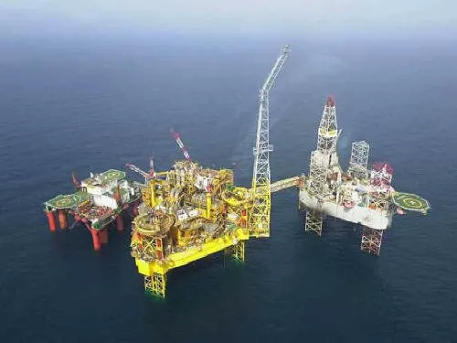
Jak przygotować CV i list motywacyjny
Dobrze napisane CV decyduje o tym, czy ktoś zaprosi Cię na rozmowę. Informacje mają być rzetelne i zwięzłe, a forma jasna i czytelna.
Co wpisać w CV
- Dane kontaktowe: imię, nazwisko, adres, telefon.
- Wykształcenie - od najnowszego, z datami i pełną nazwą szkoły.
- Kursy i szkolenia: organizator, czas trwania, umiejętności.
- Doświadczenie zawodowe od ostatniego miejsca pracy: daty, firma, stanowisko.
- Języki obce, obsługa komputera, prawo jazdy.
List motywacyjny
Do jednej strony, kilka akapitów. Ma odpowiedzieć na trzy pytania:
- Kim jesteś?
- W jakiej sprawie piszesz?
- Co Cię upoważnia, by starać się o to stanowisko: wykształcenie, doświadczenie, zainteresowania?
Zasady, o których warto pamiętać
- CV nie dłuższe niż dwie strony.
- Żadnych fałszywych ani mylących informacji.
- Zdjęcie ułatwia pracę osobom weryfikującym CV.
- Na końcu klauzula o zgodzie na przetwarzanie danych osobowych.
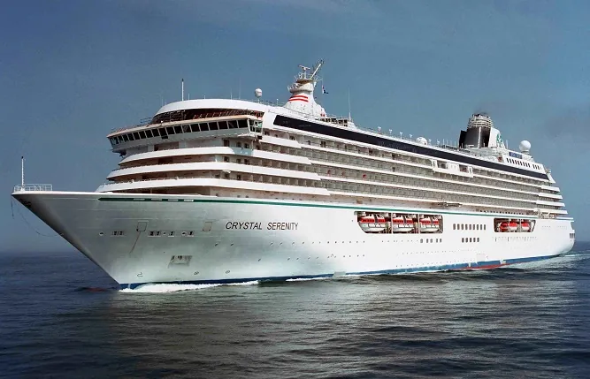
Praca na statkach pasażerskich
Często pytacie, gdzie szukać pracy na statku wycieczkowym. Niemal wszystkie duże linie mają własnych agentów w poszczególnych regionach świata, a zatrudnienie uzyskuje się wyłącznie przez agencje rekrutacyjne armatorów. Agent sprawdza doświadczenie, referencje i niekaralność, organizuje badania i podstawowe kursy, w tym wymagane przez część linii szkolenia STCW.
Na statkach potrzebna jest dobra znajomość języka angielskiego. Ten dział to informacja dla zainteresowanych, nie oferta pracy.
Galeria platform
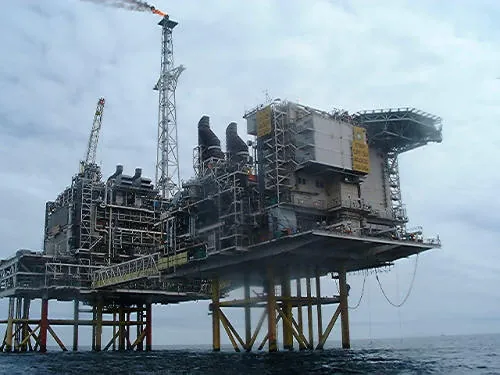
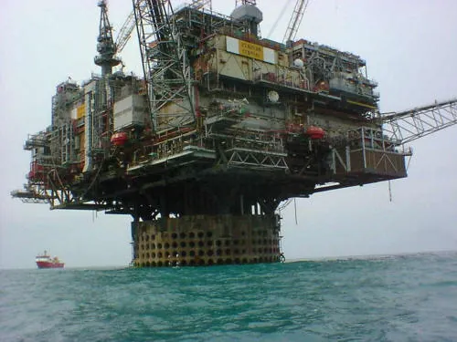
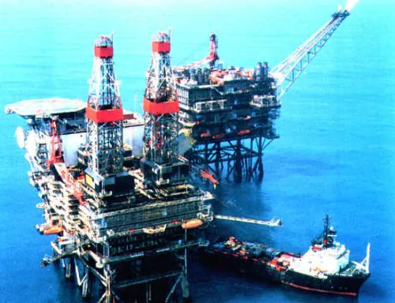
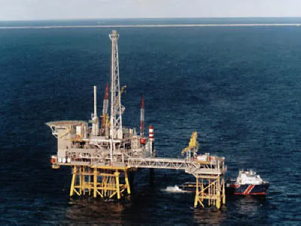
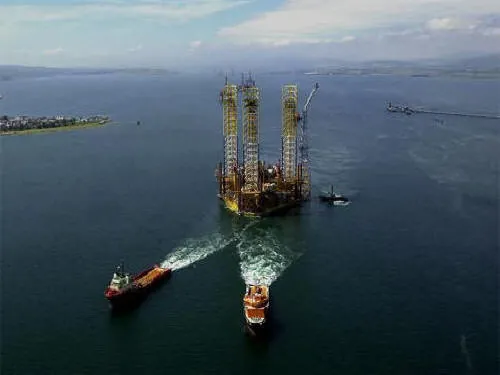
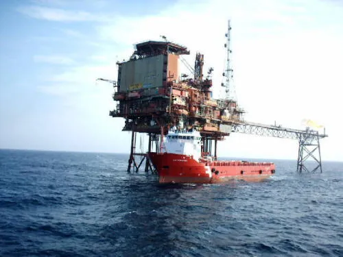
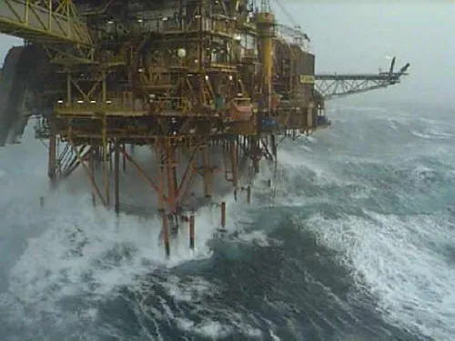
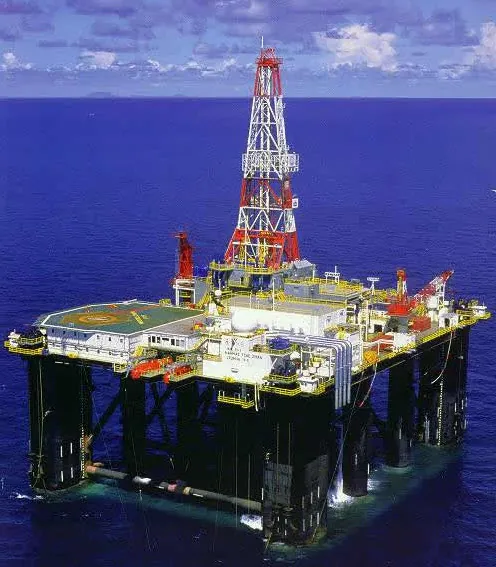
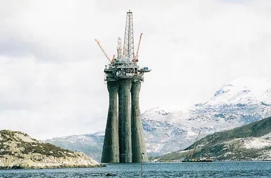
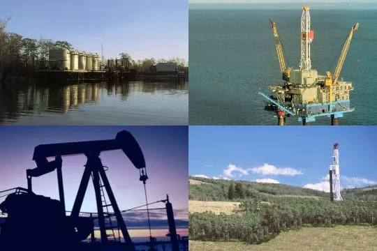
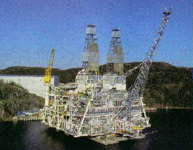
Zamów pełną ofertę informacyjną
Wypełnij formularz, a prześlemy pełne opracowanie wraz z drukiem zgłoszeniowym i adresami stron, na których można się aplikować.
- wymagania pracodawców i potrzebne kursy
- warunki socjalne, zatrudnienie i wynagrodzenie
- bazy kadr do rejestracji CV
- druk zgłoszeniowy do rejestracji
Kontakt
Najszybciej odpowiadamy na e-maile. Przy kontakcie napisz, która oferta Cię interesuje.
Badania psychologiczne PSYCHO CAR
Anna Owczarz - badania kierowców, operatorów maszyn i osób pracujących na wysokościach.
Bolesławiec, ul. Łokietka 3A/2
Zgorzelec, ul. Łużycka 43